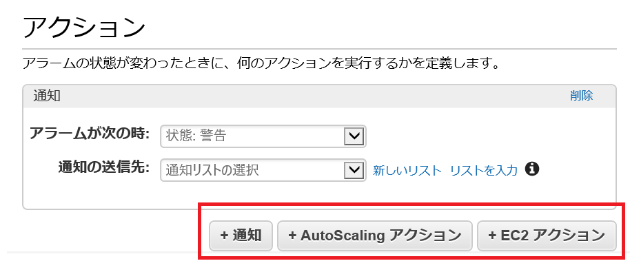
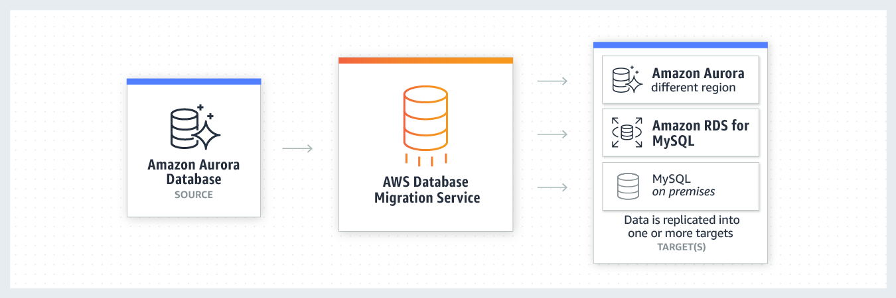

CloudWatch
サービス
-
CloudWatch メトリクス (アラーム/ダッシュボード)
- AWS サービスや OS のメトリクス収集。
- アラーム: メトリクスのしきい値による通知 -> SNS, AutoScaling, EC2 アクション
- ダッシュボード。
-
CloudWatch Logs
- AWS サービスのログ収集・保管。
- EC2 インスタンス内の OS、アプリケーションのログ (要 CloudWatch Agent)
- Amazon Elasticsearch Service の Kibana でビジュアル化して見たりする
- 送信先はない
- S3 にエクスポートできるだけ
- アクション起こすには Metrics Filter 使う
-
CloudWatch Events
- AWS リソースの変更をトリガーにしたアクション実行 -> SNS, SQS, Lambda
- S3 へのデータ投入を契機に Lambda 呼べる (CloudTrail で S3 の API アクティビティのロギングも必要)
BB: https://www.slideshare.net/AmazonWebServicesJapan/black-belt-online-seminar-amazon-cloudwatch
CloudWatch
メトリクス
-
標準メトリクス
- AWS サービスのメトリクス。
- EC2, EBS, RDS, ELB など 70 以上のサービスが対応。
-
カスタムメトリクス
- ユーザが AWS API/AWS CLI を使用して投入。
- AWS 外からも投入できるはず。
-
データポイント
- メトリクスの値のこと。
- 例: CPU 使用率がメトリクスなら、30%, 40% とかがデータポイント。
EC2 インスタンスのメトリクス
-
標準メトリクス
- ハイパーバイザーで取れるもの
- CPU 使用率、DISK I/O、ネットワーク I/O、EC2 ステータス
-
カスタムメトリクス
-
CloudWatch エージェントが収集するメトリクス
- OS から取るもの
- CPU 詳細、DISK 詳細、ネットワーク詳細、メモリ使用率、プロセス情報
- メモリ使用率はハイパーバイザーで取れない。(仮想)メモリ管理は OS の仕事。
-
API/CLI で個別に発行
-
メトリクス解像度
-
標準メトリクス
- デフオルトは基本モニタリングの 5 分？
- (デフォルトでメトリクスを 1 分の分解能で集約して保存、という文も？)
- 最小分解能は 1 秒。
-
カスタムメトリクス
- 標準 1分間隔、高解像度は 1秒間隔
料金
- https://aws.amazon.com/jp/cloudwatch/pricing/
- 基本モニタリングのメトリクス: 5分間隔
- 詳細モニタリングのメトリクス: 1分間隔
-
無料枠: 基本モニタリングのメトリクスと詳細モニタリングのメトリクス 10 個まで
- それ以上の詳細モニタリングメトリクスやカスタムメトリクスは有料
-
無料枠
メトリクス保存期間
- 高解像度メトリクスは低解像度に集約されて長期間保存される
- 60 秒未満のデータポイントを 3時間
- 1 分間隔のデータポイントを 15 日間
- 5 分間隔のデータポイントを 63 日間
- 1 時間間隔のデータポイントを 455 日間 (15ヶ月)
- https://aws.amazon.com/jp/about-aws/whats-new/2016/11/cloudwatch-extends-metrics-retention-and-new-user-interface/
CloudWatch アラーム
- メトリクスにしきい値を設定してアラーム通知
-
状態
- OK: しきい値以下
- ALARM: しきい値超過
- INSUFFICIENT_DATA: 開始直後やメトリクスが利用できないなどデータ不足の状態
-
アクション: 3 種類
- SNS 通知
- Auto Scaling (Step/Simple Scaling)
- EC2 アクション: インスタンス停止・再起動など

- ALARM → OK に戻った場合にも通知できる
請求アラーム
- アカウントの予想請求額が CloudWatch に送られる。
- 上限金額を設定しておくとアラーム通知される。
ダッシュボード
- メトリクスのグラフ表示
CloudWatch Logs
- AWS サービスのログ収集と保管。
- EC2 Log, VPC Flow Log, DNS Log (Route 53)
-
CloudWatch Agent による EC2 インスタンスの OS/アプリケーションログ収集
- Windows のイベントログ等
-
保持期間
- 1日～10年、無制限を指定
-
Amazon Elasticsearch Service の Kibana でビジュアル化して見たりする。
- ログデータは S3 にエクスポートできる。
CloudWatch Logs Metric Filter
- あらかじめ設定した文字列 ("ERROR" 等) でログをフィルタしてカウントをカスタムメトリクスとして取得する。
- カスタムメトリクスなのでアラーム通知したりダッシュボードで見たりできる。
-
用例
- CloudWatch Agent でアプリケーションログを取得。
- ERROR ログにメトリクスフィルタを設定して CloudWatch カスタムメトリクスを取得。
- カスタムメトリクスに対してアラームを設定。
- アラームから SNS で管理者にモバイルプッシュで通知。
-
CloudWatch Logs は Metric Filter 使わなければ Alarm や Events のような通知先 (アクション/ターゲット) はない？
- https://docs.aws.amazon.com/ja_jp/AmazonCloudWatch/latest/logs/MonitoringLogData.html
NOTE: Centralized-logging (集中ロギング/中央ロギング)
- 複数種類のログを一緒に集約管理すること。
- EC2 への CloudWatch Agent インストールと VPC Flow Log 有効化で CloudWatch Logs で OS ログとトラッフィクログを Centralized-logging できる。
- 集中ロギングが定訳で、中央ロギングは自動翻訳らしい。
CloudWatch Events
- AWS リソース変更をトリガーにしたアクション実行。
- イベントソース
-
イベントターゲット
- 実行するアクション。
-
- SNS, SQS, EC2, Lambda 等。だいたい全部行けると思ってい良い
- https://docs.aws.amazon.com/AmazonCloudWatch/latest/events/WhatIsCloudWatchEvents.html
-
ルール
- イベント種類とターゲットの組み合わせ。
-
CloudWatch Events と S3 の用例
- S3 バケットへのオブジェクト操作 (API コール) イベントを Lambda で受け取る例
-
https://docs.aws.amazon.com/AmazonCloudWatch/latest/events/log-s3-data-events.html
-
S3 バケットとプレフィックス (optional) を指定して CloudTrail を有効にする
- バケットとプレフィックスを指定しなければ全てのログが取れる
- S3 の Data Events:
-
Lambda 関数を作る
-
CloudWatch Events のルールを作る
- Event source として S3 の Object Level Operations であることとか、どのオペレーションかを指定。
-
デフォルトでリージョンの全バケットが対象になるけどバケット指定することもできる。
- CloudTrail とは明示的に結びつけることはないみたい。
-
Target として Lambda 関数を指定。
-
-
S3 バケットのファイルアップデートのターゲットに ECS タスクを指定する例
-
https://docs.aws.amazon.com/AmazonCloudWatch/latest/events/CloudWatch-Events-tutorial-ECS.html
- ほぼ同上。CloudTrail を有効にする手順は省略されている？
-
なお、S3 イベントを使うことでも直接 Lambda を呼べる。
CloudTrail
概要
- AWS API 実行のロギング。
- AWS API = AWS マネジメントコンソール、AWS CLI で実行されたアクション。
- S3 の API コールが取れるので紛らわしいが対象はリソースではなくアカウント操作。
- リソース変更履歴は Config。

-
現在はデフォルトで有効化されている。
リージョン
- CloudTrail はリージョン個別にもグローバルにも有効にできる。
証跡
-
CloudTrail イベントの配信設定
- 配信先: S3 バケット, CloudWatch Logs, CloudWatch Events
- CloudTrail イベントログファイルはデフォルトで S3-SSE で暗号化される。
-
証跡を全リージョンに適用することもできる
- 全リージョンの CloudTrail イベントを、1つの S3 バケットで受信できる。
- オプションで CloudWatch Logs ロググループにも同時に配信できる。
-
デフォルトでは無効。
2 種類のイベント
-
管理イベント
- コントロールプレーンオペレーション
- AWS アカウントのリソースで実行される管理オペレーション
-
データイベント (デフォルトでは記録されない)
- データプレーンオペレーション
- リソースに実行されたオペレーション
- 例
- S3 の API アクティビティ (例: GetObject、DeleteObject、PutObject API)
- Lambda の実行アクティビティ (Invoke API)
例
- セキュリティグループが変更された時に E-mail で通知
- CloudTrail → CloudWatch Logs → CloudWatch Logs Metrics Filter → SNS


CloudTrail Insights
-
AWS アカウント内 (CloudTrail ログ) の異常なアクティビティをキャプチャ。
- GuardDuty とは関係ないの？
-
証跡の作成時にデフォルトでは Insights events は無効。
- 有効にして、CloudTrail が異常なアクティビティを検出した場合、証跡の宛先 S3 バケット内の別のフォルダまたはプレフィックスに記録。
- アカウントの典型的な使用パターンと大きく異なる API 使用状況の変化を検出してログに記録。
-
例
- 通常、アカウントは S3 deleteBucket API コールを 1 分あたり 20 個までログに記録するのに対し、1 分あたり平均 100 個の deleteBucket API コール。
- 異常なアクティビティの開始時にインサイトイベントが記録され、異常なアクティビティの終了を示すために別のインサイトイベントが記録される。
CloudWatch 連携
-
CloudWatch Logs
- オプションで証跡の保存先にできる。
-
CloudWatch Events
- CloudWatch Events のイベントソースに CloudTrail が使用できる。
AWS Config
概要
-
AWS リソースの設定のコンプライアンス評価 (ルール)
- リソースの作成・変更時と定期的なディスカバリーでリソースを評価
-
AWS リソースの変更履歴の S3 バケットへの保存。


- AWS Config 各種イベントの SNS トピックへの配信
- ComplianceChangeNotification: リソースのコンプライアンスタイプの変更
- ConfigurationItemChangeNotification: リソースの作成/削除/設定変更
- https://docs.aws.amazon.com/ja_jp/config/latest/developerguide/how-does-config-work.html#delivery-channel-SNS-topic
Config ルール
- AWS リソースのコンプライアンスポリシー等のルール。
- 設定項目がルールを評価する Lambda 関数に送られてルール評価が実施される。
-
AWS マネージドルール
- AWS が提供する 80 以上のルール。
-
カスタムルール
- ユーザが Lamda で実装する。
Config ダッシュボード
- 監視対象のリソース数や非準拠ルール数を表示するダッシュボード
- https://docs.aws.amazon.com/ja_jp/config/latest/developerguide/viewing-the-aws-config-dashboard.html
Config アグリゲータ
- 複数アカウント/リージョンの Config 評価結果を１つのアカウントに集約
AWS Trusted Advisor
概要
- AWS 環境を自動で精査し、AWSに蓄積されたベストプラクティスに基く推奨設定を通知。
- AWS アカウントを開設した直後から監査が有効。
- ダッシュボードで確認。
- 内容をメールで受信（要設定）
- https://www.slideshare.net/AmazonWebServicesJapan/20180711-aws-black-belt-online-seminar-aws-trusted-advisor
- https://dev.classmethod.jp/cloud/aws/cm-advent-calendar-2015-getting-started-again-aws-td/
５つの観点
- コスト最適化: 稼働率の低いインスタンスや使われていない EIP など
- パフォーマンス: 稼働率が高すぎるインスタンスやセキュリティグループのルール数過多など
- セキュリティ: パブリックになっているリソースなど
- フォールトトレーランス: ELB最適化、RDS Multi-AZ、EBSスナップショット等
- サービス制限: アカウント毎のリソース数の最大値 (上限緩和申請するやつ) の 80% に達していないか
- https://aws.amazon.com/jp/premiumsupport/technology/trusted-advisor/

- 全機能はビジネス/エンタープライズ以上。
- メール通知の登録や CloudWatch Events への連携もできる
# 移行のためのサービス
TCO Calculator
- https://aws.amazon.com/jp/tco-calculator/
- オンプレや DC のサーバの台数や CPU 等を入力することで AWS との TCO の比較ができる。
AWS ADS: Application Discovery Service
-
オンプレのサーバの各種情報を収集。ADS のダッシュボードで確認。
- アプリケーションの検出、依存関係、性能 (CPU, RAM, I/O, etc.)。
-
AWS Migration Hub と統合 → 移行の進捗をトラッキング
-
エージェントレス型
- VMware vCenter Server 環境
- AWS Agentless Discovery Connector (OVA 形式の仮想アプライアンス) を使用する。
-
エージェント型
- Ubuntu, CentOS, RedHat, Windows Server
-
https://www.slideshare.net/AmazonWebServicesJapan/20170621-awsblack-beltadssms
- 問題例: The company is using a VMWare vCenter Server for data center management of their vSphere environments and virtual servers. A DevOps engineer is tasked to implement a solution that will collect various information from their on-premises and EC2 instances, such as operating system details, MAC address, IP address, and many others. The Operations team should also be able to analyze the collected data in a visual format.
- 解答
- Using the AWS Application Discovery Service, deploy the Agentless Discovery Connector in an OVA file format to your VMware vCenter and then install the AWS Discovery Agents on the EC2 instances to collect the required data.
- Use the AWS Migration Hub Dashboard to analyze your hybrid infrastructure.
AWS Migration Hub
- オンプレサーバ移行のためのダッシュボード。
VM Import/Export
- VM イメージの EC2 インスタンス (AMI) へのインポート/元のオンプレ VM へのエクスポート。
- VMware ESX, VMware Workstation, Microsoft Hyper-V, Citrix Xen をサポート。
- AWS SMS が上位機能なので試験に出なそう。
AWS SMS: Server Migration Service
-
多数の VM を短時間で AWS に移行できる。
- 1 アカウント最大 50 VM まで同時移行
-
AWS コンソールでジョブの設定やトラッキングができる。
サーバーの増分レプリケーション
- オンプレサーバ側の変更をクラウド側に増分でレプリケート。
- ダウンタイムを最小化できる → オンプレ稼働中にレプリケートして、移行時にオンプレ側に入った差分だけをクラウド側に適用すれば移行時のダウンタイムが短くなるという意味。
サポート対象
-
プラットフォーム
- VMware vSphere, Windows Hyper-V, Microsoft Azure
-
OS
- Windows Server 2003、2008、2012、2016
- Windows 7、8、10
- RHEL、SUSE、CentOS、Ubuntu、Oracle Linux、Fedora、Debian Linux
SMS Connector
- SMS に必要な FreeBSD VM の仮想アプライアンス。
- VMware vSphere や Hyper-V, Azure に導入する
Ref.
https://docs.aws.amazon.com/ja_jp/server-migration-service/latest/userguide/server-migration.html
NOTE: VMware vSphere
- VMware vSphere は vSphere ESXi と vCenter Server を含む仮想化ソフトウェアのスイート
- ESXi は vSphere のハイパーバイザー

AWS DMS: Database Migration Service
- https://aws.amazon.com/jp/dms/
- オンプレ DB から Amazon RDS へのデータ移行。
- 低コスト: 移行プロセス中に使用したコンピューティングリソースと、追加ログのストレージにのみ料金が発生。
- テラバイトサイズの DB 移行にわずか 3 USD。
同種のエンジン間での移行
- Oracle → RDS for Oracle
- MS SQL Server → RDS for SQL Server
- MySQL → RDS for MySQL
- MySQL → Aurora
異なるエンジン間での移行
- Scheme Conversion Tool でスキーマやコードの変換を実施して DMS で移行。

プロダクション環境と開発環境 (開発・テスト・ステージング) でのデータ移行
- AWS でプロダクションの実データで開発・テスト -> オンプレのプロダクションにデプロイ
- オンプレの開発環境で開発・テスト -> AWS のプロダクションにデプロイ
DB 統合
レプリケーション

AWS Snowball
- ストレージアプライアンスの物理輸送でペタバイト規模のデータを安全に S3 に転送。
- 例) 100 テラバイトのデータ転送
- 100 Mbps の専用接続を使って 100 日以上
- Snowball デバイスを 2 個使用すれば同じ容量のデータを 1 週間未満で転送
Snowball アプライアンス
- https://aws.amazon.com/jp/snow/
- 50 TB Snowballs (42 TB of usable space) - データコピー必要時間は 1 日未満
- 80 TB Snowballs (72 TB of usable space) - データコピー必要時間は 2 日半
- 耐タンパ性筐体、256 ビット暗号化、TPM 使用。暗号化キーは AWS KMS を使って管理。
Snowball Edge
- ストレージだけじゃなくオンボードで EC2, Lambda が実行できる。
- 100 TB
Snowmobile
- セミトレーラートラックが牽引する長さ 14 m の丈夫な輸送コンテナ
- 1 台あたり 100 PB。
AWS DataSync
- オンプレと EFS 間のマネージドデータ転送サービス
- OSS ツールと比べて最大 10 倍の速度でアクティブなデータセットを Direct Connect またはインターネット経由で転送。
- アプリケーションを変更したり、API に書き込む必要はありません。
- 1回のデータ移行だけでなく、定期的な同期を伴う進行中ワークフロー、データ保護と復元のレプリケーションに使用できる。
AWS Storage Gateway
- オンプレから S3 へのデータ移行にもつかえる。
- Ref AWS SAA: ECS/EKS, Lambda, EFS, Storage Gateway
AWS Transfer for SFTP
- SFTP (SSH File Transfer Protocol) で外部 (オンプレ環境等) から S3 にファイルをアップロード。
- SFTP は SSH で FTP を暗号化する。SCP とは別モノ。SCP はサーバ側にシェルが必要。
# コスト管理のためのサービス
AWS Cost Explorer
- グラフで期間ごとのコストを確認できる。
- 過去の使用状況から今後 3ヶ月のコストを予測できる。
- 予算 (AWS Budget)
- 予算額を超えたときや、推定コストが予算を超えたときに Amazon SNS 通知できる
- コスト配分タグ: タグを使用することで部門や環境ごとにコストを確認できる
Trusted Advisor
- コスト最適化の項目がある
AWS Organizations
- Consolidated Billing で複数アカウントの請求をまとめることができる。